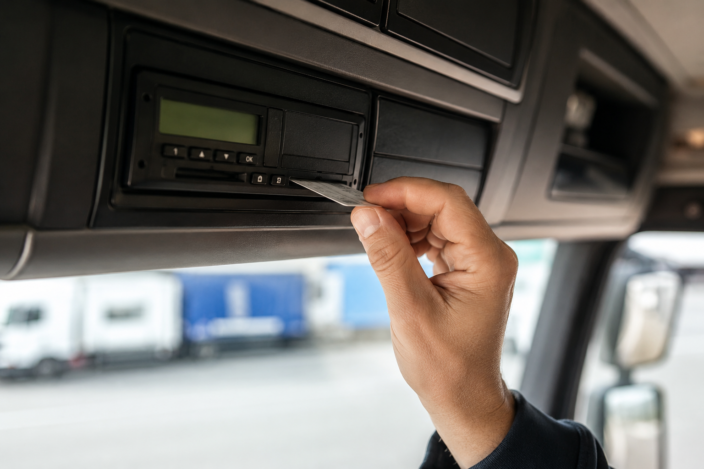

Tachograf od 1. 7. 2026: koho se povinnost týká
Od 1. července 2026 musí být některé automobily a soupravy s přívěsem o hmotnosti od 2,5 t do 3,5 t vybaveny chytrým tachografem. Shrnuli jsme, koho se povinnost týká, jaké jsou výjimky a co udělat, abyste pokutu nedostali hned první den.

Koho se povinnost týká
Novinka míří na dopravu za účelem podnikání v rámci mezinárodní přepravy. Rozhodující není samotné vozidlo, ale největší povolená hmotnost celé jízdní soupravy — tedy tažného vozidla i přívěsu dohromady.
- Souprava s hmotností nad 2,5 t a do 3,5 t včetně přívěsu.
- Přeprava zboží pro cizí potřebu nebo pro vlastní podnikání.
- Jízda mimo území ČR — mezinárodní přeprava.
Pokud kterákoli z podmínek neplatí, povinnost na vás nedopadá. Typicky se netýká soukromých jízd s přívěsem za rodinným automobilem ani vnitrostátní dopravy.
Jak se počítá hmotnost soupravy
Sečtěte největší povolenou hmotnost tažného vozidla a největší povolenou hmotnost přívěsu z technického průkazu. Nejde o skutečnou naloženou hmotnost — kontrola pracuje s údaji z dokladů a výrobního štítku.
Výjimky, na které se často zapomíná
Z povinnosti jsou vyňaty některé typy jízd. V praxi nejčastěji narazíte na tyto tři:
- Nekomerční přeprava — přesun vlastního materiálu bez vazby na podnikání.
- Vnitrostátní jízdy — v ČR povinnost pro tuto hmotnostní kategorii nevzniká.
- Přeprava vozidel do hmotnosti 2,5 t včetně přívěsu.
Výjimku je potřeba umět prokázat. U kontroly rozhoduje účel jízdy, ne to, co je napsáno na vozidle — vozte s sebou doklady k nákladu.
Co udělat před 1. červencem
- Sečtěte hmotnosti soupravy podle technických průkazů a ověřte, zda do kategorie spadáte.
- Nechte si u autorizované dílny namontovat a ověřit chytrý tachograf — čekací doby se před termínem prodlužují.
- Zajistěte řidičům kartu řidiče a proškolte je v obsluze i v pravidlech dob řízení.
- Zaveďte pravidelné stahování dat a jejich archivaci po dobu, kterou předpis vyžaduje.
- Zkontrolujte technický stav přívěsu — u kontroly se řeší celá souprava, ne jen tachograf.
Co to znamená pro přívěs
Tachograf se montuje do tažného vozidla, přívěs sám žádné zařízení nepotřebuje. Kontrola u soupravy nad 2,5 t ale bývá důkladnější — a nejčastější závady jsou pořád stejné: nefunkční osvětlení, prodřená kabeláž, opotřebené obložení brzd a vůle v ložiskách náprav.
Než vyjedete, projděte přívěs podle našeho servisního přehledu a chybějící díly doplňte předem.